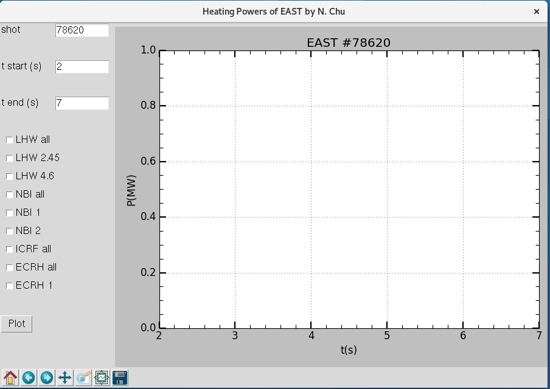

Which GUI approach in python
There is a good paper[1] talking about it. In the end, PySide sames to be a better choice. However, in the end, I choose the most reliable way to finish it. My choice is Tkinter. That is just because tkinter has best compatibility. I have tried it on Linux server, fedora desktop and mac. The application written with TK work all the way. However, when I try to use pyqt, gtk on the server, the necessary modules may not be installed by the root manager of that server, thus you will face difficulties to use it.
Tkinter GUI [2]
This is the first python GUI that I ever used. Its UI interface is ugly, however it is also the most supported UI designer on all versions of python.
A minimal example [1]
This example is provide in the reference.
1 | import Tkinter as tk |
Label display
1 | # Label for EAST shot |
relx and rely controls the relative position of the Label window "place" property control where the Label will display in the main frame window.
Text input box
1 | # Text input for shot number |
Get the return value of Text input box: shot = numpy.float(self.recipient1_shot)
Check button
1 | # Checkbutton for LHW all power |
Get the return value of a check button: on_off = self.Check_LHW = tk.IntVar() If the check button is checked, on_off has value = 1. if it is not checked like the default case, the on_off value = 0. This value can be used for logical judgment.
Canvas figure window
Canvas will prepare an area to display figures inside the GUI main
window. 1
2
3
4
5
6
7
8
9
10
11
12
13
14# prepare a figure plot
fig = pyplot.figure()
ax = fig.add_subplot(111)
ax.plot(t, sig)
# a tk.DrawingArea
canvas = FigureCanvasTkAgg(fig, master = self)
canvas.show()
canvas.get_tk_widget().pack(side=tk.TOP, fill=tk.BOTH, expand=1)
toolbar = NavigationToolbar2TkAgg(canvas, self)
toolbar.update()
# Control plot area
# canvas._tkcanvas.pack(side=tk.TOP, fill=tk.BOTH, expand=1)
canvas._tkcanvas.place(relx = 0.21, rely = 0.01)
# canvas._tkcanvas.grid(row = 2, column = 1)
Push button
Push button will initial a function to run. 1
2
3
4
5
6
7
8
9
10 # design plot button
self.go_button = tk.Button(self,text='Plot',
command=lambda: self.plot_out(canvas,a),font=("Arial", font_size))
self.go_button.place(relx = 0., rely = 0.8)
def plot_out(self, canvas, ax) :
ax.clear()
ax.plot(t, sig)
canvas.draw()
In the code, command=lambda: self.plot_out(canvas.a) is the function to be called. self is the object variable that contents all property of this GUI window. as is the axes object for the plotted figure. canvas the window object for this axes plot. This kind of structure shows a very good programming design for the GUI code structure.
Final effect of the complete GUI window 
Reference
[1] https://www.pythoncentral.io/introduction-python-gui-development/
[2] http://robotic-controls.com/learn/python-guis/basics-tkinter-gui